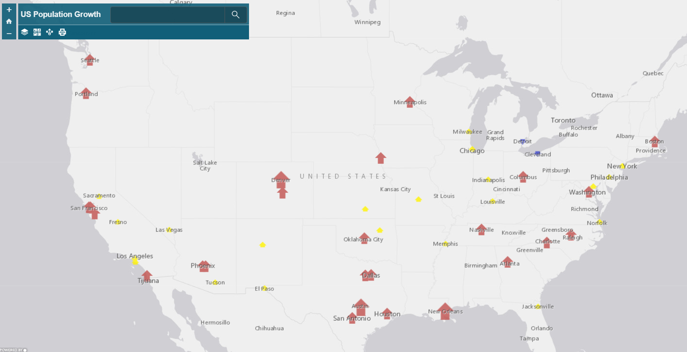

Web GIS Portfolio
Created by Lauren Featherston
Assignment 1
Some text, then a hyperlink
about GIS info on Baton Rouge.

Assignment 2
Creating a web app that can show how population in the US changes over time, is one of the many ways that one can use GIS and web applications in conjunction with one another. 